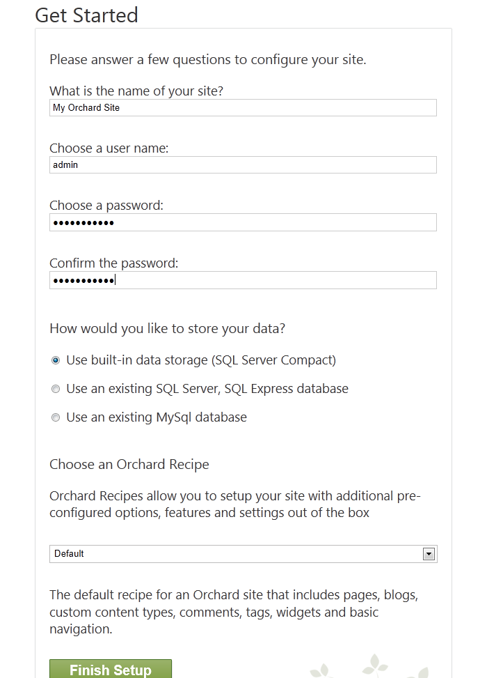
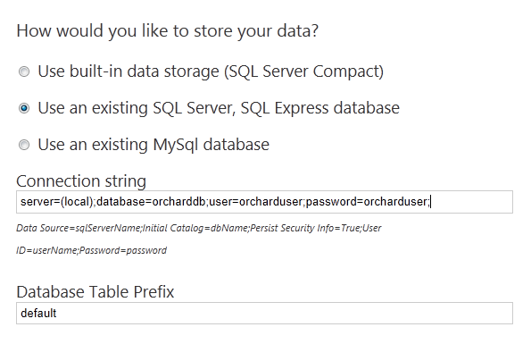

This topic targets, and was tested with, the Orchard 1.8 release.
Different Ways To Install Orchard
There are four ways you can install Orchard. You can:
- Install it using the Microsoft Web Platform Installer.
- Install it from Microsoft WebMatrix as shown in Working with Orchard in WebMatrix.
- Download the Orchard .zip file and install it as described in Manually Installing Orchard Using a zip File.
- Enlist in the Orchard source code and build Orchard from the command line or in Visual Studio.
This topic shows how to install Orchard using the Microsoft Web Platform Installer.
Requirements
The minimum requirements for running Orchard are the following:
- ASP.NET 4.5
- A web server such as IIS Express 8, 7.5 or IIS 7.x.
When installing IIS, make sure you enable the ASP.NET IIS modules. Also make sure that you run Orchard in an integrated pipeline ASP.NET 4 application pool.
Important: If you previously installed any pre-release versions of WebMatrix, ASP.NET Web Pages, or ASP.NET MVC 4, you should uninstall those products before Orchard will run correctly on your computer. To develop Orchard sites, many developers will want to use a database such as SQL Server, and a web page programming environment such as WebMatrix or Visual Studio 2013. The following installation was tested with a clean installation of Windows 8.1. It uses the Web Platform Installer and it includes Orchard, IIS 8.0 Express, and optional applications for Orchard development like WebMatrix and SQL Server Compact 4.0.
Installing Orchard
To begin, download and install the Web Platform Installer. When you're done, run it.
Find Orchard CMS and then click Add to include Orchard as an item to install.

Click Install. Accept the license terms in order to continue.

When the installation is complete, the dialog shows the list of installed tools in addition to Orchard. Click the Launch link to open the site in WebMatrix.

Running Orchard in WebMatrix
After WebMatrix starts, it should inmediately launch Orchard in the default browser. If not, you can launch Orchard by clicking the Run drop-down button, and selecting which browser to use. In WebMatrix you can click the Files workspace to see the contents of the Orchard site.

The first time Orchard is launched, you see in your browser the Orchard setup screen.

By default, Orchard includes a built-in database that you can use without installing a separate database server. However, if you are running SQL Server or SQL Server Express, you can configure Orchard to use either of those products instead by specifying a connection string. Optionally, you can enter a table prefix so that multiple Orchard installations can share the same database but keep their data separate.

The setup screen also includes a section where you can choose an Orchard recipe to set up your site. You can choose from the following Orchard recipes:
- Default. Sets up a site with frequently used Orchard features.
- Blog. Sets up a site as a personal blog.
- Core. Sets up a site that has only the Orchard framework for development use.

For information about recipes and how to make a custom recipe, see Making a Web Site Recipe.
After you've entered the required information on the setup screen, click Finish Setup. When the setup process is complete, your new site's home page is displayed.

You can now begin configuring your site.
Change History
- Updates for Orchard 1.8
- 4-15-14: Updated info for 1.8 release. Updated some screenshots, requirements, .zip link and other minor changes.
- Updates for Orchard 1.1
- 4-12-11: Updated screens for 1.1 installation.
- 3-14-11: Added information about recipes in the setup screen.